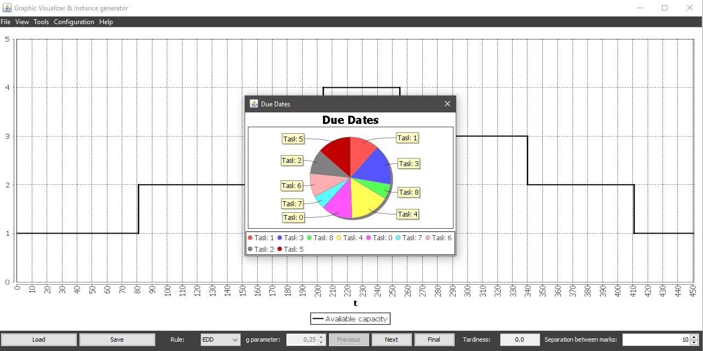

Due dates chart shows each task's due date relative to the sum of all due dates in a pie chart
Due dates chart is updated everytime one task is scheduled, removing from the chart those tasks that have been scheduled, untill the chart gets empty (except in manual scheduling).